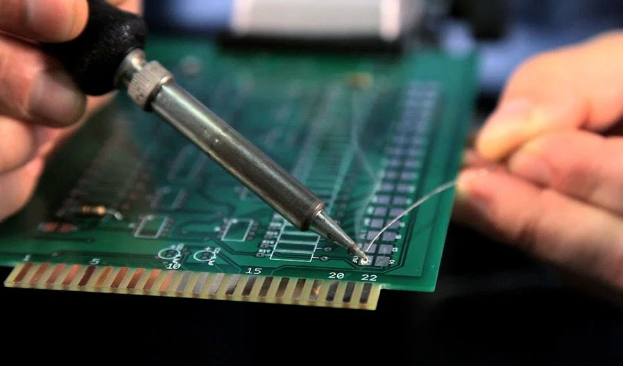

Thực hiện
Bước 1: Trang bị kĩ năng cần thiết
{kind=link}
Tuy nhiên, trước khi bắt đầu làm mạch này, bạn cần trang bị một số kĩ năng và kiến thức sau:
Kiến thức cơ bản về điện tử.
Kỹ năng hàn mạch.
Cách sử dụng đồng hồ đo điện (VOM).
Bạn cũng cần kiên nhẫn và có nhiều thời gian rảnh.
Bước 2: Lên danh sách linh kiện


1 Phíp đồng
2 x 74HC595 (SOP-16) -> thêm IC
1 x Nx555 (SOP-8)
1 x C1815 (SOT-23)
19 x 1kΩ (0805) -> smd
1 x 10kΩ (0805)
1 x 1µF (0805)
1 x 10µF (0805)
16 x LED SMD (0805)
1 x Jack DC cái 3.5mm x 1.3mm -> loại gì, dán hay cắm?
BOM Lists đầy đủ tại đây:
Bước 3: Gia công mạch
Dụng cụ cần thiết:
Mạch in đã in bằng giấy in nhiệt
Phíp đồng
Bàn là
Dao cắt mạch
Giấy nhám
Dung dịch ăn mòn -> dung dịch gì?
Các bước thực hiện:
Bước 1: Chuẩn bị mạch in trên giấy bóng: Sau khi vẽ PCB trên phần mềm, xuất file để in mạch trên giấy bóng -> note thêm vào nếu không layout thì chúng mình có public file in mạch luôn
- Lưu ý, phải dùng máy in laser mới được -> vậy in ở đâu?
Bước 2: Cắt và vệ sinh phíp đồng: Đo kích thước mạch và cắt, nên để dư 3- 5mm. Nên đánh dấu vị trí khu vực cần cắt. Sử dụng đầu nhọn của lưỡi dao để cắt từng cạnh (ở cả 2 mặt). Sau khi cắt đủ sâu có thể bẻ. Phíp đồng cần được vệ sinh để mực in trong quá trình chuyển mạch có thể chuyển lên hết PCB . Vệ sinh bằng cách chà giấy nhàm, sau khi chà không đặt tay lên bề mặt
Bước 3: Chuyển mạch (toner transfer): Cắt mạch in trên giấy bóng và đặt lên phíp đồng đã cắt và vệ sinh (mặt in mực tiếp xúc với mạch đồng) rồi tiến hành ủi mạch -> bao lâu?. Nhiệt từ bàn ủi sẽ làm chảy lớp mực trên giấy bóng và chuyển xuống mặt đồng, bảo vệ những khu vực mà ta mong muốn không bị ăn mòn
- Lưu ý, trong quá trình ủi, có thể do tác dụng nhiệt không đều hoặc vệ sinh phíp đồng không sạch mà có vài mảng mực sẽ không bám lên phíp đồng, ta dùng bút lông dầu để tô lại
Bước 4: Ăn mòn (Etching) Đem mạch đi nhúng với dung dịch ăn mòn -> bao lâu?, những phần không được mực in bảo vệ sẽ bị ăn mòn, chỉ chừa lại đường mạch mong muốn. Trong quá trình nhúng nên lắc board mạch để tăng tốc độ phản ứng (có thể dùng nhíp để lắc board mạch hoặc khoan lỗ ở một góc và sỏ -> xỏ dây vào
- Lưu ý, để đảm bảo an toàn cho bản thân và môi trường khi sử dụng hóa chất, không đổ hóa chất ăn mòn xuống cống
Bước 5: Vệ sinh, khoan lỗ và bảo quản mạch: Sau khi ngâm mạch, dung dịch ăn mòn không tác dụng tới lớp mực, để loại bỏ lớp mực này, ta dùng giấy nhám để chà sạch hoặc dùng axeton để lau đi. Đối với các linh kiện chân cắm, lựa chọn mũi khoan có kích thước thích hợp -> bao nhiêu để khoan lỗ. Lớp đồng để lâu trong không khí sẽ bị oxy hóa gây mất thẩm mỹ, do đó ta trộn axetol và nhựa thông lại để phủ lên PCB